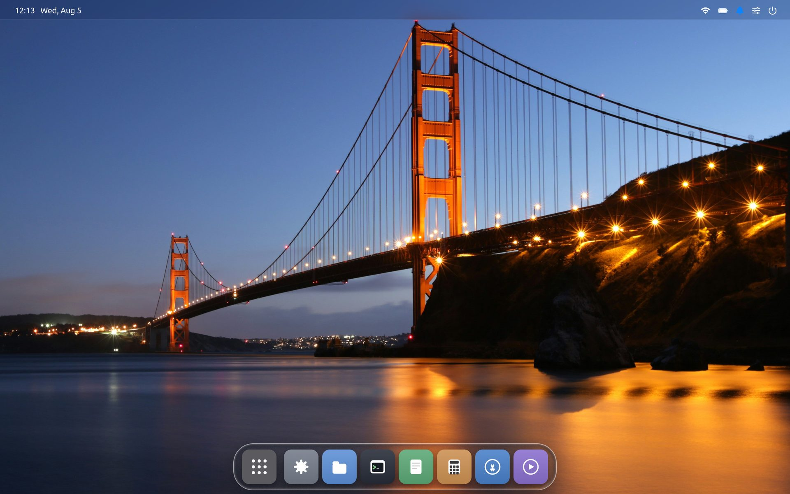
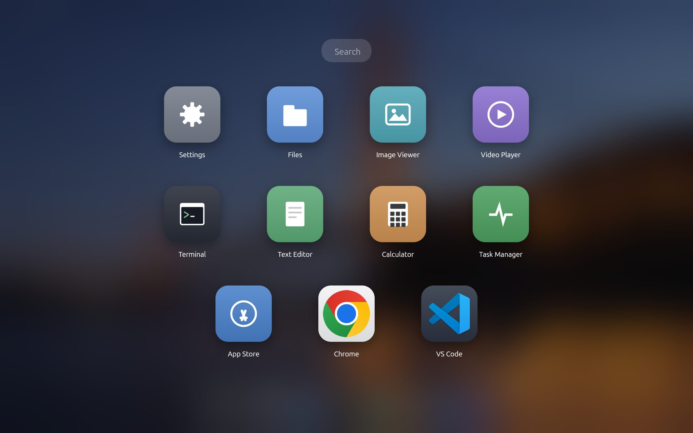
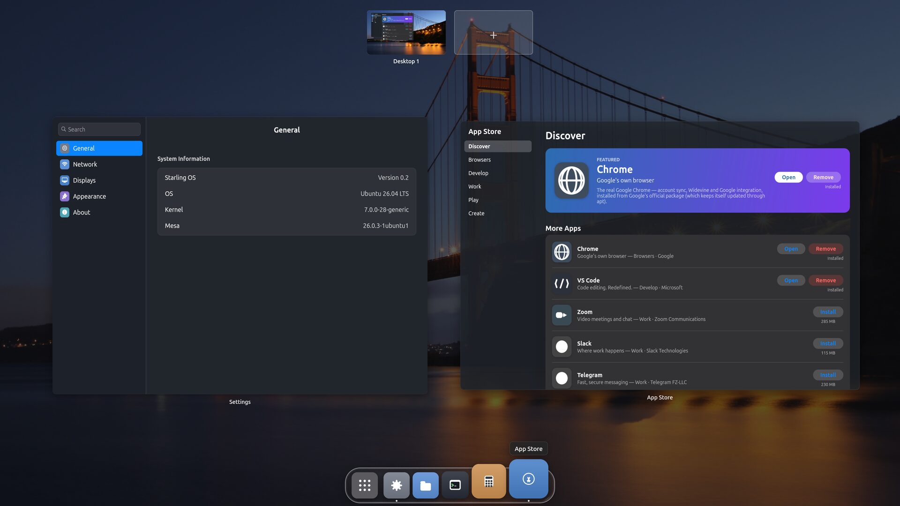
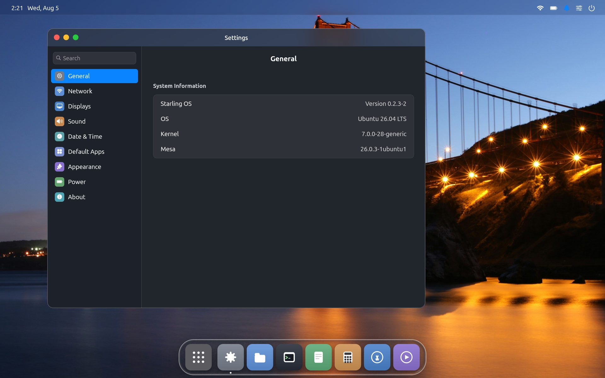
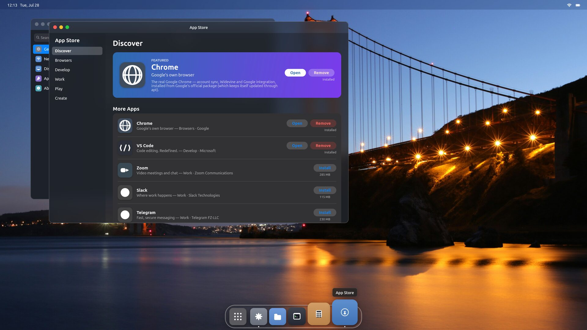

Using Starling
A tour of the desktop — the dock and Launchpad, spaces and Mission Control, the keyboard shortcuts, the apps, and how to install more. If Starling isn't installed yet, start with the install steps.
Choosing Starling at login
Installing Starling doesn't replace your current desktop — it adds a session you pick at the login screen. To start it:
- Click your name at the login screen.
- Open the session menu — usually a gear, or a small icon in a lower corner of the password box.
- Choose Starling from the list, then enter your password and sign in.
Starling stays selected for next time. The session menu only appears with a Wayland-capable login manager (GDM has one); it looks a little different on LightDM or SDDM, but the step is the same — find the session picker and choose Starling. Once you've signed in, you land on the desktop, whose interaction model is close to macOS.
The desktop is three things: a wallpaper, a thin menu bar across the top with the clock and status indicators, and a dock floating at the bottom holding your apps. Everything else is reached from the dock, the Launchpad, or a right-click on the wallpaper.

Your apps, along the bottom
Out of the box the dock holds the first-party apps, in order: Launchpad, Settings, Files, Terminal, Text Editor, Calculator, the App Store, and Video Player.
- Click an icon to launch or focus that app.
- A running app shows an indicator dot under its icon.
- Drag an icon to reorder the dock.
- Right-click an icon for its menu, including Remove from Dock.
Installed apps that aren't pinned appear in the dock while they run, and drop off when they close.
Every app, in one grid
The first dock icon opens the Launchpad — a full-screen grid of every app Starling knows about, over a blurred background.
- Click any app to launch it.
- Type to filter the grid by name — start typing and only matching apps remain.
- Click empty space or press Esc to dismiss it.

The desktop records itself
No extra software, and nothing to configure.
- Record — from the control centre, or Ctrl + Shift + R, captures the whole screen.
- Record App — opens Mission Control and asks which window you want. It captures that window’s own content, not the patch of screen it sits in, so windows stacked on top never appear and moving or resizing it mid-recording doesn’t spoil the take.
- A red dot and a running clock sit in the menu bar for the whole recording, so one can never be going unnoticed.
Recordings land in ~/Videos as MP4, and the
Video Player opens them. Where the machine has a hardware H.264 encoder the
composited frame goes straight to it as a dma-buf and the CPU never touches
a pixel — about 0.05 of a core on a modern laptop. Machines without one
fall back to a software encoder, which works but costs more.
Move, resize, tile
- Windows carry macOS-style colored circle buttons on the left of the title bar — close, minimize, maximize.
- Drag the title bar to move a window; drag an edge or corner to resize.
- Double-click the title bar to toggle maximized.
- Windows float by default. Flip the whole desktop to a tiling (dwm-style master-and-stack) layout with the Tiling tile in the control centre or the Tiling Windows switch in Settings — toggling back restores your floating layout.
More than one desktop
Starling has spaces (virtual desktops) and a Mission Control overview, driven from the keyboard the way macOS does it.
| Ctrl + → / ← | Slide to the next / previous space |
| Ctrl + Shift + → / ← | Carry the focused window to that space |
| Ctrl + Tab | Cycle through your spaces |
| Ctrl + ↑ | Open Mission Control |
| Esc | Close Mission Control |
To add a space, right-click the wallpaper and choose New Desktop, or click the + tile in Mission Control. Ctrl + arrows belong to the system — apps never see them — so they work no matter which window is focused.

Keyboard reference
| Ctrl + → / ← | Adjacent space |
| Ctrl + Shift + → / ← | Move focused window to adjacent space |
| Ctrl + Tab | Cycle spaces |
| Ctrl + ↑ | Mission Control |
| Ctrl + ↓ | AI Space |
| Ctrl + Shift + R | Start / stop screen recording |
| Ctrl + Space | Toggle the input method (fcitx5, for CJK and other IME input) |
| Esc | Close Mission Control |
| Double-click title bar | Maximize / restore a window |
Nine first-party apps
All written against Starling's own Swift framework.
Settings
Appearance, displays, network, sound, and system information — see below.
Files
Browse your home directory and the filesystem.
Terminal
A real terminal with a PTY, running your login shell. TUI programs like vim and htop work.
Text Editor
A plain-text editor.
Calculator
A basic calculator.
Task Manager
CPU, memory, disk and network with live sparklines, a sortable process table, and End Process.
Video Player
Plays your recordings and other video. For Starling’s own recordings it decodes on the GPU and never copies a frame through the CPU.
Image Viewer
Opens images from Files.
App Store
Install more applications — see below.
Settings sidebar
General (system info), Network (Wi-Fi), Displays, Sound, Date & Time, Default Apps, Appearance (Dark Mode, Tiling Windows, Notifications), Power, and About.

Scaling is pinned to 2.0 in this release, and there is no display-mode picker — the session uses the connector's preferred mode.
Adding applications
Starling launches applications installed on your machine — it does not bundle them. Two ways to add them.
Through the App Store. Open it from the dock. It
lists a curated set — Chrome, VS Code, Slack, Discord, Teams, Telegram,
IntelliJ IDEA, GIMP, Blender, Spotify, Zoom, and more. Click
Install and Starling installs it using your system's
own apt (you may be asked to authenticate — that's
polkit authorising the install). When it finishes, the app
appears in the Launchpad and can be pinned to the dock.
With your distribution's packaging. Anything you
install the normal way — apt install, a .deb,
a Snap or Flatpak — runs as a native Wayland client (or through the
in-tree X server for X11 apps). The major toolkits composite today:
Chromium/Electron, Qt6, GTK3 and GTK4.

The catalog is small and curated on purpose, and most tiles use generic category glyphs rather than vendor logos — those logos are trademarks and Starling ships none of them. Chrome and VS Code show their real icons in the Launchpad and dock, read from your system at runtime.
This is an early preview
Starling (v0.3.0) boots as a real desktop on real hardware and runs real applications, but it's the work of one person over a few months. A few limits you'll notice:
- No screen lock. There is a screensaver, but it is decoration: any key or click dismisses it, with nothing asked. Don't rely on it to secure an unattended machine.
- Every display scales the same. The session picks one scale for the whole desktop (fractional steps included — 1.25 and 1.5 render as crisply as 2.0); per-display scale isn't implemented yet.
- No display-mode picker. The session uses the connector's preferred mode.
- Zoom runs without audio. It reports
no pactl and pacmd found— expected, and deliberate: installingpulseaudio-utilsmakes Zoom crash at startup. Sound in other apps is unaffected. - Verified on AMD and virtio-gpu graphics, and on NVIDIA as a hybrid laptop's second GPU (per-app render offload); Intel, and NVIDIA driving the desktop itself, aren't yet tested.
Hit a problem? The session log is at
/tmp/starling-session-<your-uid>.log, and issues go to
the tracker.
The full user guide
and install guide
live in the repo.
Ready to try it?
Starling installs from a single package on Ubuntu 26.04, and adds a login option without touching your existing desktop.